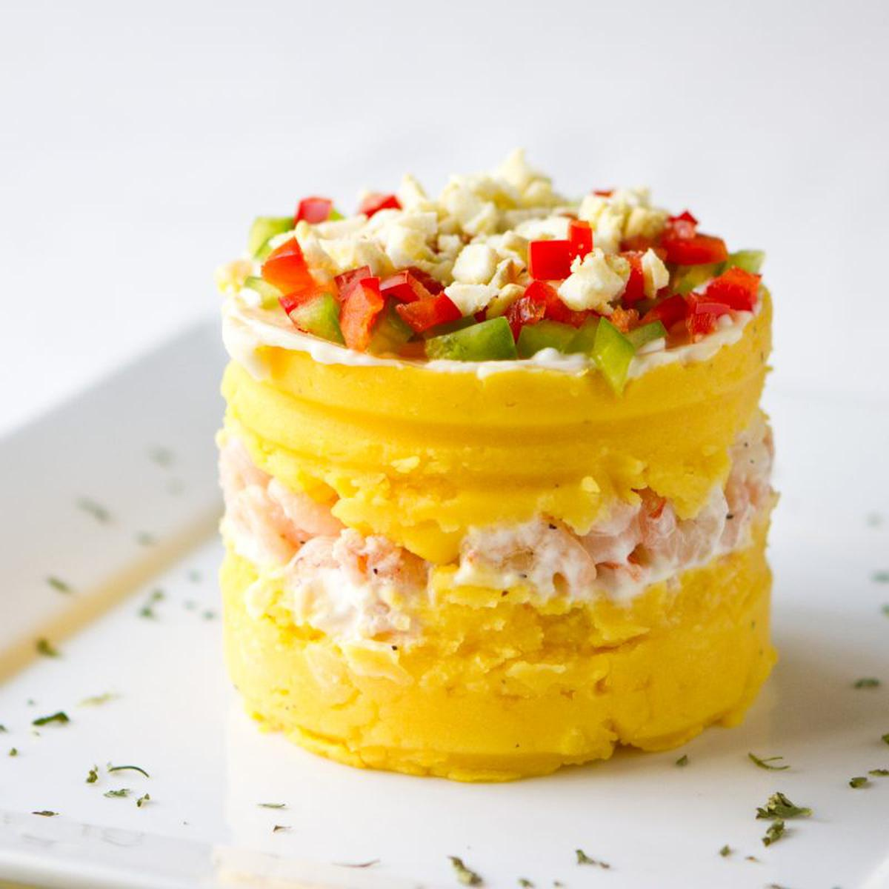

Go back to look at other recipes
Causa

Description
In the ancient Peru, it was prepared with yellow potatoes, which have
a soft texture, and kneaded with crushed chilli peppers. It can be done
with several varieties, being the papa amarilla the most commonly used.There isn't a consensus about the origin of the name but the word quechua Kawsay means Food or what feeds.
Ingredients
- For the Chicken
- 1 large cooked chicken breast, diced or shredded
- 1/4 cup green peass
- 1/4 cup diced cooked carrot
- 1 teaspoon minced shallot
- 2 tablespoon finely chopped roasted red peppers
- 2 tablespoons chopped fresh cilantro
- 1 teaspoon lime juice
- 1/4 cup mayonnaise, or as needed
- For the Potato Mixture
- 1 1/4 pounds Yukon Gold potatoes, peeled and quartered
- 2 tablespoons aji amarillo chili paste, or to taste
- 2 tablespoons olive oil
- 1 lime, juiced or more to taste
- cayenne pepper to taste
- salt to taste
- 1 avocado, quartered and sliced
- For the Sauce
- 1/3 cup mayonnaise
- 1 tablespoon sour cream (Optional)
- 1 small clove garlic, crushed
- 2 teaspoon aji amarillo chili paste, or to taste
- 1 teaspoon water as needed
Steps
- Combine boiled chicken, green pease, carrots, shallot, roasted red peppers, cilantro and lime juice in a bowl.
- Season it with salt and cayenne. Add mayonnaise and mix until combined.
- Cover the mixture with a plastic wrap and refrigerate until ready to use.
- Add aji amarillo, olive oil, and lime juice to the potatoes.
- Season with cayenne and salt. Mash together with the potato masher.
- Switch to a spatula and mix until completely smooth
- Line four 6-ounce ramekins with plastic wrap. Scoop mashed potatoes evenly into ramekins; press and smooth out the tops.
- Cover each with a layor of avocado slices.
- Fill ramekin to the top with chicken salad, pressing it down and pulling up the plastic wrap to eliminate any air pockets.
- Cover with final layer of mashed potatoes, going up to 1/2 inch or more over the rim.
- Seal top with a new layer of plastic wrap and fold the sides over to seal. Refrigerate salads until completely chilled, at least 1 hour.
- Mix mayonnaise, sour cream, garlic, and aji amarillo together for the sauce, adding a splash of water to adjust the thickness.
- Remove the top layer of plastic wrap from each salad.
- Invert each ramekin onto a serving plate: remove ramekiuns, then plastic wrap.
- Spoon some sauce around each salad and on top.
Go back to look at other recipes